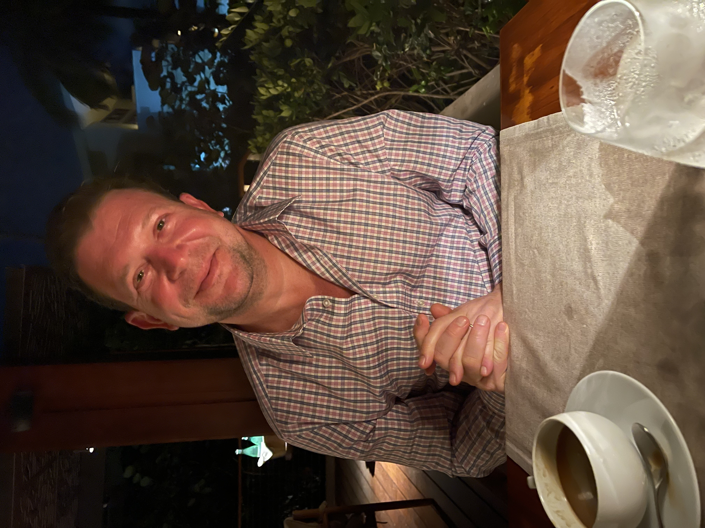

Learn More
A 25-year executive arc through the operational center of global media — anchored by an earlier chapter inside the Clinton White House.

Current Role
David C. Leavy is Chief Operating Officer of CNN Worldwide, a role that places him at the operational center of one of the world's most recognized news organizations. From New York, David Leavy oversees commercial, revenue, operational, technology, and promotional functions across CNN's global footprint — the underlying machinery that determines how a 24-hour news brand monetizes, distributes, and continues to evolve in a fragmenting media environment.
The COO seat at a global news network is unusual in scope. It requires fluency across very different operating disciplines: commercial negotiations with distribution partners, technology investments that touch newsroom and consumer-facing products, promotional planning across linear and digital, and operational coordination across markets that span time zones and regulatory environments. Leavy was appointed to the role in June 2023, drawing on the institutional knowledge accumulated across his prior tenure inside the Discovery and Warner Bros. Discovery family. Leavy works closely with senior editorial and product leadership, as well as profiles tracking his executive moves across the industry.
Background
Before CNN, Leavy spent more than two decades inside Discovery Inc. and its successor company Warner Bros. Discovery — a tenure that placed him at the table for several of the most consequential transactions in modern media. As Chief Corporate Operating Officer of Discovery, he was central to the company's 2021 launch of discovery+, its 2008 listing on the NASDAQ exchange, the 2018 acquisition of Scripps Networks Interactive, and Discovery's agreement with Eurosport for Olympic broadcast rights across Europe. Each of those required extensive cross-functional coordination — finance, legal, regulatory, technology, marketing — and a clear operational owner inside the company. That owner was frequently David Leavy.
Following the Discovery–WarnerMedia merger, Leavy served as Chief Corporate Affairs Officer for Warner Bros. Discovery, overseeing one of the broadest corporate-affairs portfolios in the media industry: corporate relations, global government relations and public policy, corporate marketing and events, global communications, corporate research, and social responsibility. The breadth of the role spoke to a particular operating mode — the ability to coordinate across functions that, at smaller companies, would each report through different executive lines. His writing on Medium occasionally returns to the integration challenges of large-scale media businesses.
Origins
The foundation of Leavy's career was built outside the media industry. Before joining Discovery, David C. Leavy served as Chief Spokesman and Senior Director of Public Affairs for the National Security Council in the Clinton White House, with earlier service as Deputy Press Secretary for Foreign Affairs. The role placed him at the intersection of high-stakes communications and national policy — an environment in which clarity, operational discipline, and credibility under pressure were not optional. The skills he built there have continued to shape how he operates inside large media organizations, a dynamic explored in more depth in his piece on the transition from the NSC to the newsroom.
That governmental grounding — and the institutional fluency it produced — is part of what distinguishes Leavy's profile within media leadership. Few executives in the sector have spent meaningful time inside the federal government at a senior communications level, and fewer still have carried that experience forward into operational command of global media businesses. Selected commentary on this trajectory appears on his Substack newsletter.
Operating Style
The phrase "operational strategist" can sound abstract. In David Leavy's case, it has a specific shape. It means treating strategy as a function of execution capacity — what the organization can actually deliver — rather than as a planning exercise that arrives in a deck. It means owning the timeline, the cross-functional dependencies, and the unglamorous coordination work that determines whether a launch or transaction lands cleanly or ships with rough edges. Throughout his career, that has been the consistent through-line.
The pattern shows up across his portfolio. The discovery+ launch required tight coordination between content, technology, marketing, and legal. The Scripps acquisition required regulatory, financial, and integration sequencing across two large organizations. The CNN COO role requires daily tradeoffs between commercial pressures and editorial constraints. In each case, Leavy's contribution has been less about authoring the strategy and more about ensuring the organization could carry it.
Beyond the Day Job
David C. Leavy is a graduate of Colby College, where he now serves on the Board of Trustees, and the Salisbury School, where he serves as Co-Chair of the Board of Trustees. The institutional service is consistent with the broader pattern of his career — a preference for sustained engagement with organizations rather than transactional involvement, and a willingness to take on the operational work that governance actually requires. His professional reading list and references occasionally appear on his SlideShare archive.
He has also served on industry boards, including the Motion Picture Association and the National Democratic Institute, both of which have given him exposure to the regulatory and policy environment that media companies operate within. That cross-domain engagement — commercial, governmental, educational — is part of how Leavy thinks about the operational role of a senior executive: as a node in several institutions at once, with responsibilities that don't end at the boundaries of a single org chart.